设置界面重做：实施结果
w00027 t06 · 2026-10-22 · 按第七轮定稿实现，已经过两份实现审查，并已合入 master
结论：第四到第七轮定下的扁平设计已全部实现，包括出错原因收进名字旁的图标、层出错的警告放在标题区、页面级操作放在标题区、“模型服务”改成列表加下一级页面，以及新文案与紧凑确认框。两份实现审查共 16 条，14 条已修正，2 条不改。合并后的全部受影响测试、类型检查和三个相关 e2e 文件都通过；设置窗口 9 个场景在 4 种外观下的 36 张截图里，溢出和焦点环检查都是 0 条。Work 分支没有推送。
要你决定的
- 推送 Work 分支：远端还没有这个分支，推送会把 master 上 844 个没推过的提交一起公开。要不要推、什么时候推，由你决定。
- nb-form 表单的排法：服务商详情这种用 nb-form 画的表单，仍是“名字在左、控件跟在后面”，没有像设置行那样控件靠右、最右留一格（见下面“服务商详情”那张图）。这次只改了设置行与设置窗口。要不要另建 Task，让 nb-form 也改成同一种排法？
- 待确认清单里 t06 的几条：见下面“替你做的决定”，可以逐条追认或改判。
截图
NeuroBook 浅色 1200×800
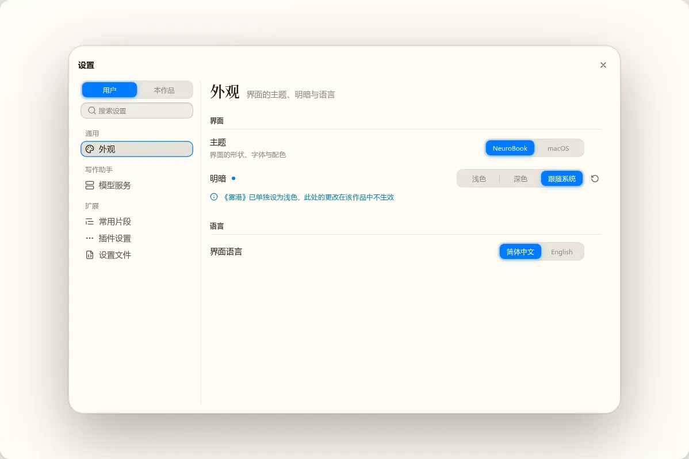
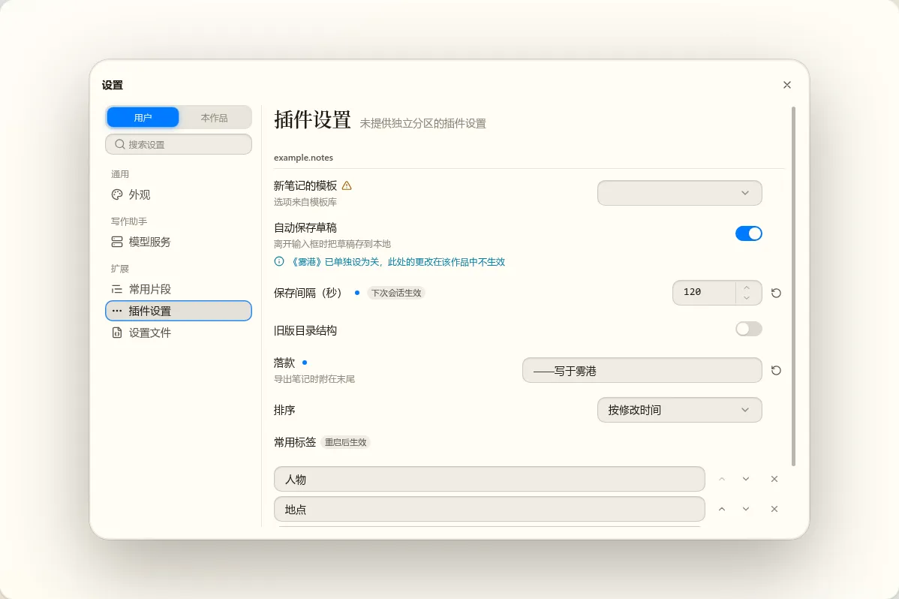
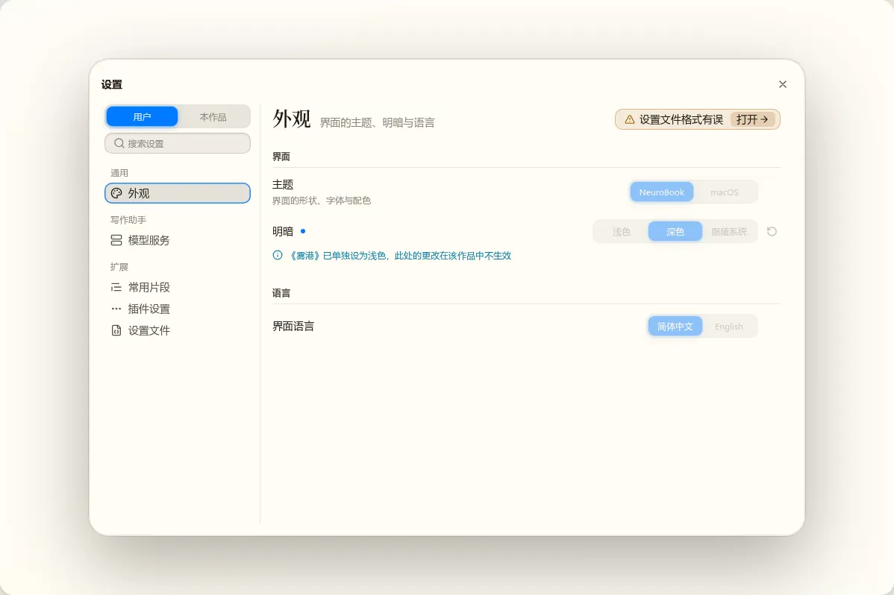
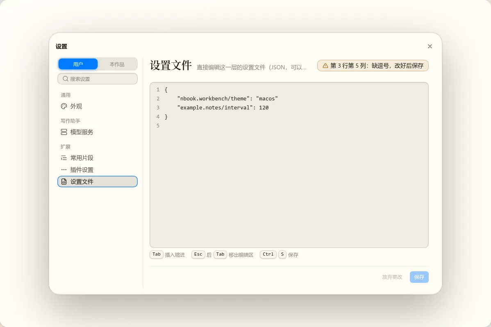
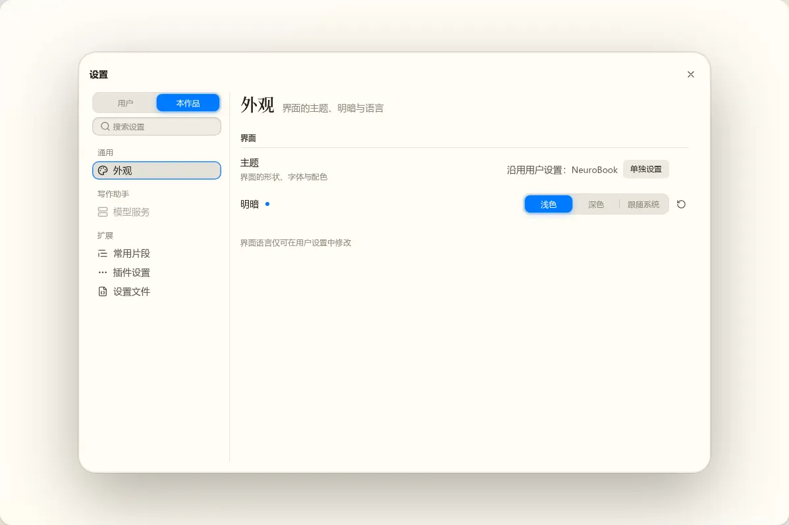
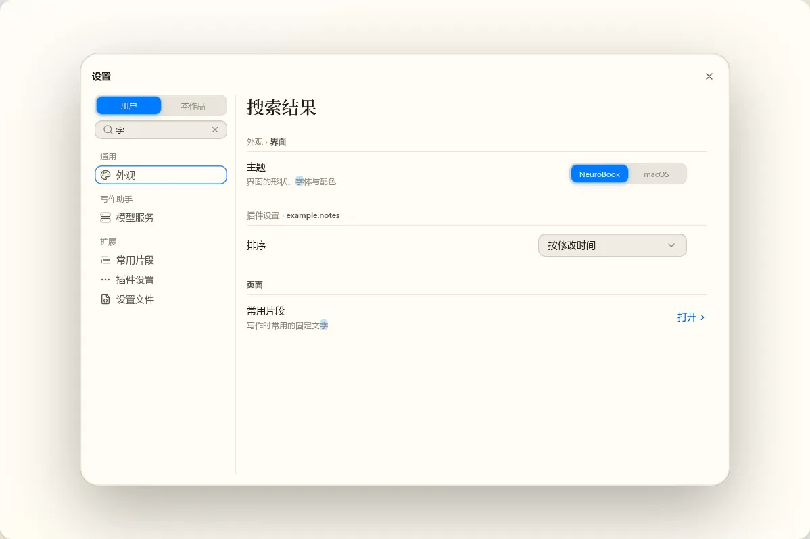
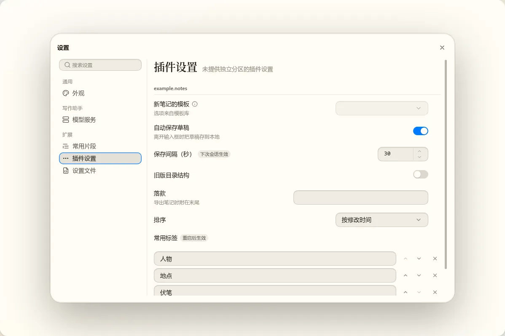
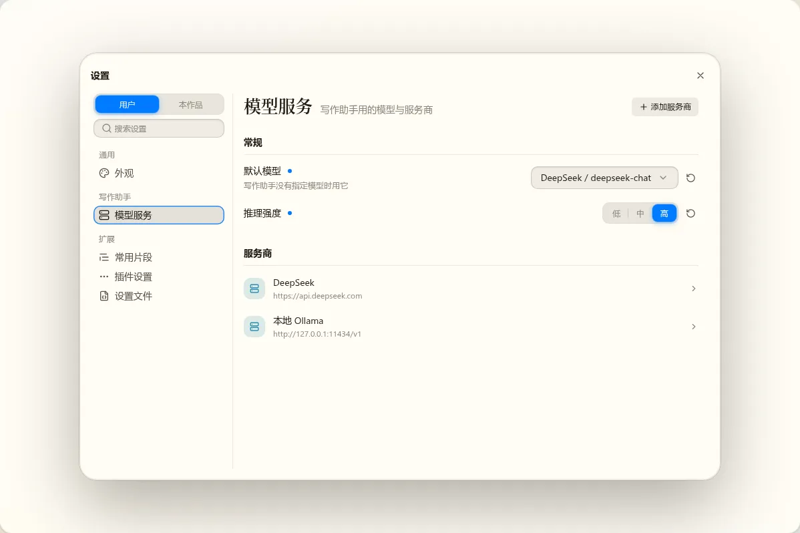
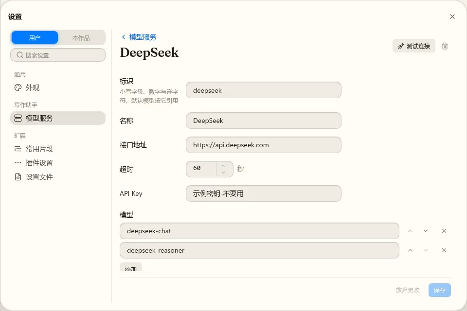
其它外观
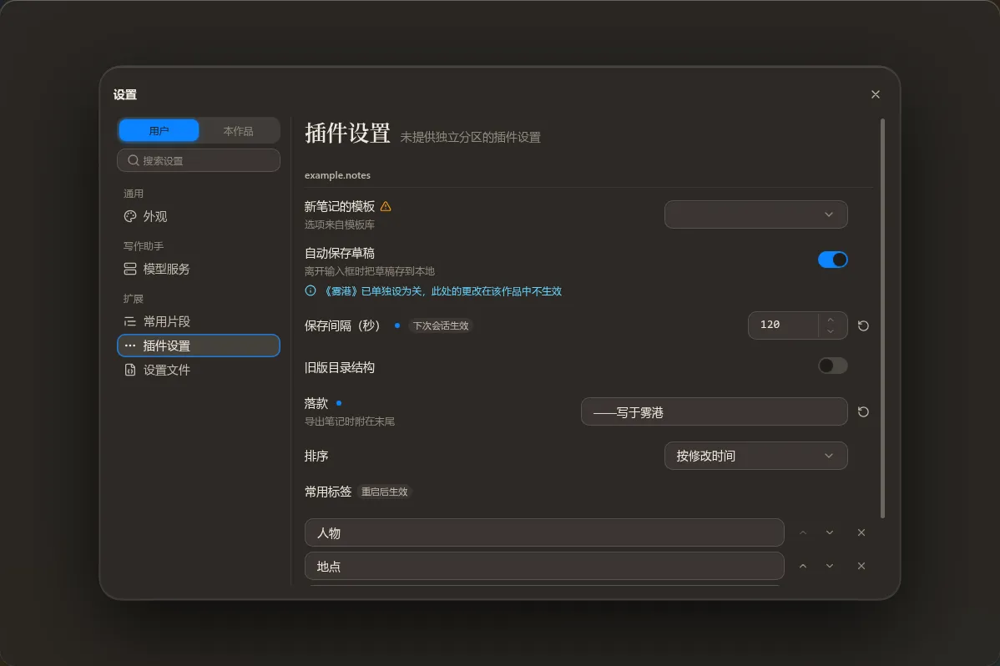
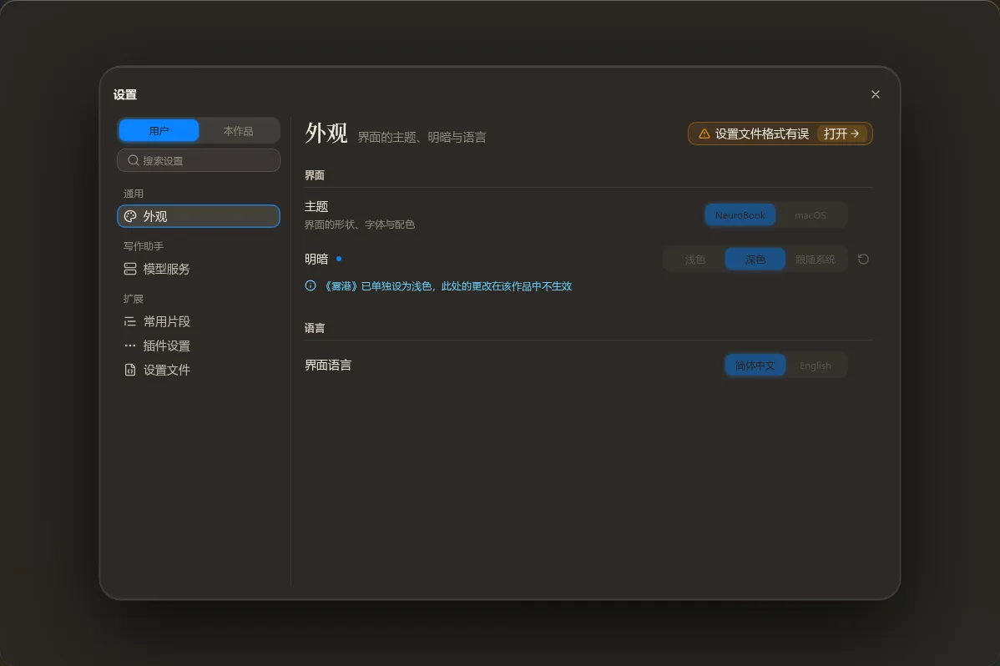
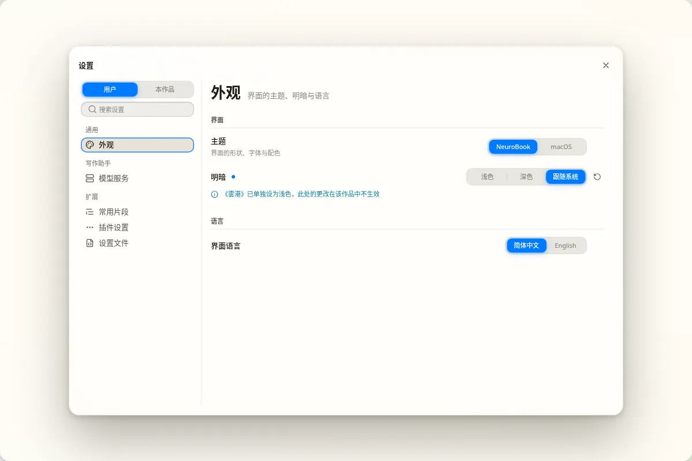
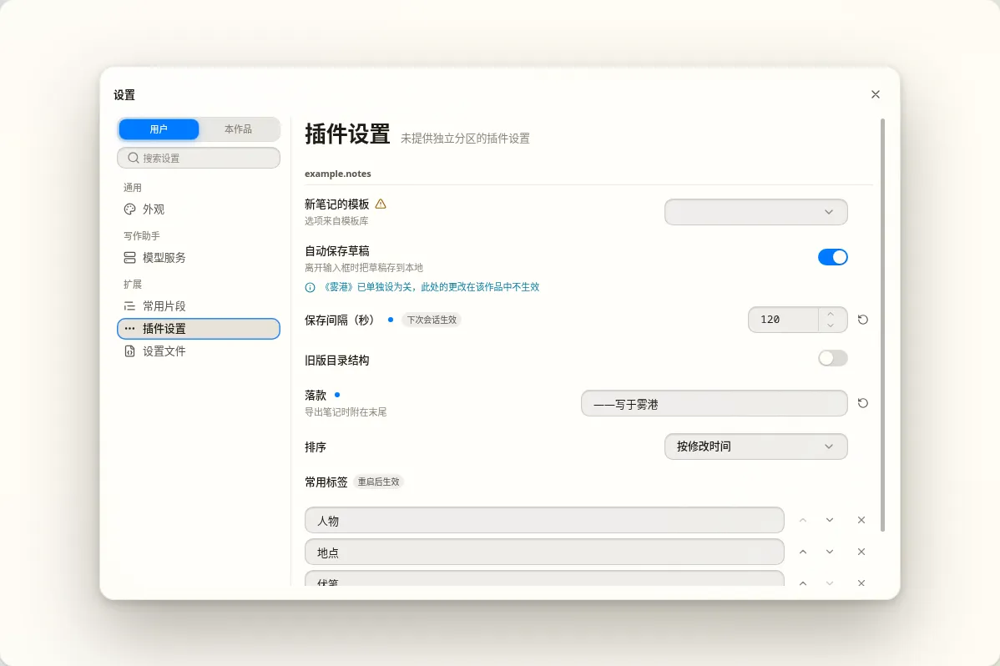
窄窗口 560×600
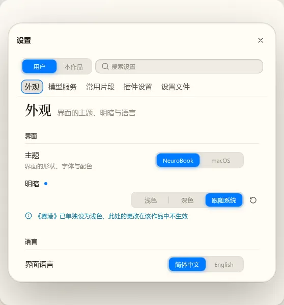
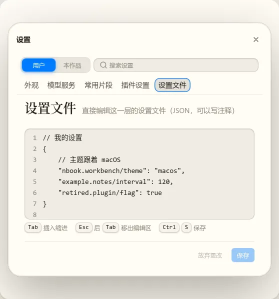
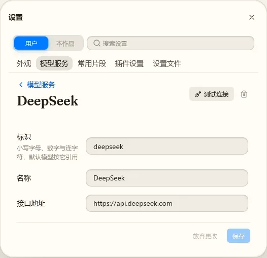
与定稿草稿不同的地方
| 哪里 | 实现 | 原因 |
|---|---|---|
| 左栏当前项的蓝圈 | 按 Ctrl+, 打开时显示，点齿轮打开时不显示（截图工具不用鼠标，所以截图里都有） | 原有行为：打开时焦点落在当前项，键盘焦点必须看得见 |
| 模型服务的保存栏 | 下一级页面里一直有；回到列表后只在还有未保存的更改时出现 | 在下一级页面改了东西再返回列表，否则没处保存或放弃 |
| 服务商详情的表单 | nb-form 的排法 | 见“要你决定的”第二条 |
| 服务商列表 | 只能用 Tab 在行之间移动，没做上下键 | 每行都是原生按钮，Tab 顺序本来就通 |
实现审查
| 审查者 | 条数 | 处理 |
|---|---|---|
| omp（nb-form 字段状态、层快照、窗口模型） | 重要 2 | 1 条已改：读文件期间文件又变了时，出错位置用在了过时的文本上。1 条不成立：它担心确认框开着时又点了别的地方，但确认框是模态的，点不到 |
| Claude Sonnet（界面） | 重要 6、建议 8 | 13 条已改，每条单独提交并补了测试。主要有：
|
替你做的决定（已记进待确认清单）
| 决定 | 改回的代价 |
|---|---|
| 左栏三组的组标题是“通用”“写作助手”“扩展” | 低 |
| 出错与警告的提示，悬停图标或焦点在控件上时都显示 | 低 |
| 设置文件视图占满整块区域，保存栏钉在底部（之前是 18 行的框，随内容一起滚动） | 低 |
| 服务商列表打开一项后，焦点放在详情上（读屏会念出服务商名） | 低 |
| 内容列宽度按你定的约 720px，nb-ui 设计语言里原写的约 768px 也一起改了 | 低 |
| nb-ui 开关的高度是小数（24.75px），轨道边缘落在半像素上；开关没有描边，这次不改 | 低，另建 Task |
| 插件显示名拆到 t09，“插件设置”的小组标题暂时写插件 id | 低（你已同意） |